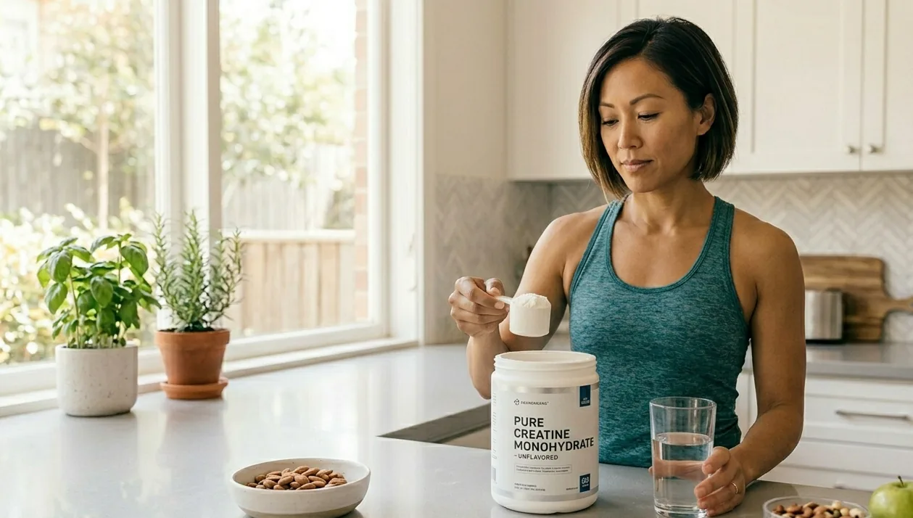

Is Creatine Worth Taking If You're Not a Bodybuilder?
As an Amazon Associate and partner with other affiliate websites, I earn from qualifying purchases.

As an Amazon Associate and partner with other affiliate websites, I earn from qualifying purchases.
Is Creatine Worth Taking If You're Not a Bodybuilder?
Creatine has a reputation problem. Most people associate it with gym bros lifting heavy weights and trying to get huge. But in the last decade, the research on creatine has expanded dramatically — and it turns out this supplement has meaningful benefits for everyday adults who just want more energy, better focus, and a body that holds up well as they age. If you've ever wondered whether creatine is worth taking if you're not a bodybuilder, the answer might surprise you.
Quick Answer
Yes, creatine is worth taking even if you don't lift weights. Research shows it improves energy production in muscle and brain cells, supports cognitive function, reduces fatigue, and helps preserve muscle mass as you age. It's one of the most studied supplements in existence with an exceptional safety record and real benefits for busy adults over 30.
What Creatine Actually Does in Your Body
Creatine is a naturally occurring compound stored primarily in your muscles. It helps regenerate ATP — the energy currency your cells use for any high-effort activity, whether that's sprinting, lifting, or intense mental focus. Most people get some creatine from meat, but not enough to saturate muscle stores. Supplementing fills that gap.
When your creatine stores are fully saturated, you recover faster between efforts, produce more force when you need it, and maintain cognitive performance under stress. None of this requires being an athlete.
5 Benefits of Creatine for Non-Athletes
1. Better Energy for Daily Life
Creatine doesn't give you a stimulant buzz like caffeine. Instead it improves your cellular energy system so your body handles physical and mental demands more efficiently. Many people report feeling less drained at the end of a busy day after consistent creatine use for 3-4 weeks.
2. Cognitive Function and Mental Performance
This is the benefit most people don't know about. Several studies show creatine supplementation improves working memory, processing speed, and mental performance under fatigue — particularly in people who are sleep-deprived or under stress. For busy adults running on limited sleep, this is significant.
3. Muscle Preservation as You Age
After 30, adults naturally lose 3-5% of muscle mass per decade without intervention. This process accelerates after 40. Creatine combined with even moderate resistance training significantly slows this decline. Maintaining muscle mass isn't just about appearance — it's directly linked to metabolic health, insulin sensitivity, and longevity.
4. Faster Recovery
If you exercise at all — even walking regularly or doing bodyweight workouts — creatine reduces muscle damage and speeds recovery. You feel less sore, bounce back faster, and can train more consistently over time.
5. Bone Health Support
Emerging research suggests creatine may support bone density, particularly when combined with resistance training. This is especially relevant for women over 35 and anyone at risk for osteoporosis.
How to Take Creatine (Simple Version)
Forget the complicated loading protocols you might have read about. The simplest approach that works:
- Dose: 3-5g per day
- Timing: Doesn't matter significantly — pick a consistent time
- Form: Creatine monohydrate — the most studied, cheapest, and most effective form
- With food or without: Either works, though some people prefer it with a meal to avoid minor stomach discomfort
- Loading phase: Not necessary — just take 3-5g daily and stores saturate within 3-4 weeks
Recommended Creatine Products
| Product | Why It's Worth It | Link |
|---|---|---|
| Creatine Monohydrate | Pure creatine monohydrate — the gold standard form with the most research | View on Amazon |
| Ultra Brain Supplement | Cognitive support stack that complements creatine for mental performance | View on Amazon |
| Electrolyte Powder | Creatine draws water into muscles — staying hydrated amplifies the benefits | View on Amazon |
| NaturesPlus Multivitamin | Foundational nutrition support to maximize creatine effectiveness | View on Amazon |
Common Myths About Creatine
- "Creatine causes kidney damage": False. This myth originated from a single case study involving someone with pre-existing kidney disease. Decades of research in healthy adults show no kidney damage at standard doses.
- "You'll gain a lot of water weight": You may gain 1-2kg initially as muscles draw in water. This isn't fat and actually represents improved cellular hydration. It stabilizes after the first few weeks.
- "It only works if you lift heavy": The cognitive and cellular energy benefits occur regardless of exercise intensity.
- "You need to cycle on and off": There's no evidence supporting cycling. Long-term continuous use is safe and effective.
- "Expensive forms are better": Creatine monohydrate is the most researched and most effective form. Kre-Alkalyn, buffered creatine, and other variants offer no meaningful advantage.
FAQ
How long before creatine starts working?
Energy and strength improvements typically appear within 2-4 weeks of consistent daily use. Cognitive benefits may be noticeable sooner, particularly under conditions of fatigue or stress.
Is creatine safe for women?
Yes, completely. Research shows women benefit from creatine similarly to men — with additional potential benefits for bone density and hormonal health during perimenopause and menopause.
Do I need to drink more water when taking creatine?
Slightly more than usual is beneficial since creatine draws water into muscle cells. An extra glass or two per day is sufficient — you don't need to dramatically increase intake.
Can I take creatine without exercising?
Yes, though the muscle-preserving and strength benefits are amplified with even moderate exercise. The cognitive benefits occur regardless of exercise habits.
Is creatine the same as caffeine or pre-workout?
No. Creatine is not a stimulant. It has no effect on heart rate, sleep quality, or alertness in the way caffeine does. It can be taken at any time of day without affecting sleep.
Final Tip: Start With One Month and Judge for Yourself
Creatine is worth taking if you're not a bodybuilder precisely because its benefits extend far beyond the gym. Take 3-5g of creatine monohydrate daily for four weeks and pay attention to your energy levels, mental clarity, and how you feel at the end of demanding days. The research supports it — but your own experience is the best evidence.